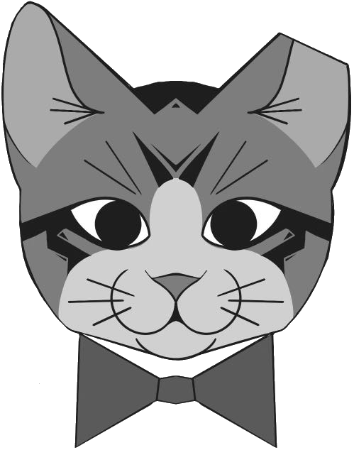

OzarksTNR

The Tipped Kitten:
She was always skinny, afraid, and hungry.
6 months old and pregnant with a large litter.
When her kittens were born, the community took an interest in her as they had never done before. Now she was fed, and her kittens grew. One day, the community members brought metal boxes, and she went on a journey. She was scared, but she was kept warm and safe. Shortly, she returned to her home that she had always known with a tipped ear. She did not have any more kittens. She was fed, confident, and free to be.
Program Statement:
Ozarks TNR aims to improve the health and number of homeless cats in the Springfield, Missouri area. By trapping, sterilizing, and returning community cats to their outdoor homes, we will work with individuals and rescues in the community, lower the number of homeless kittens born in our area, and reduce the stress on local rescue resources.